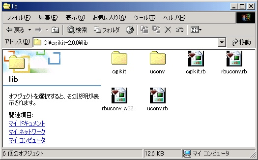
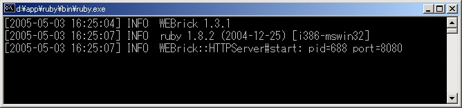
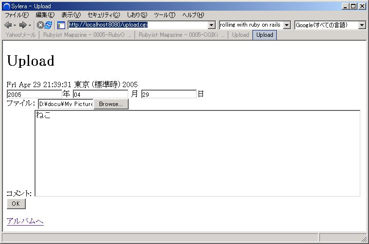
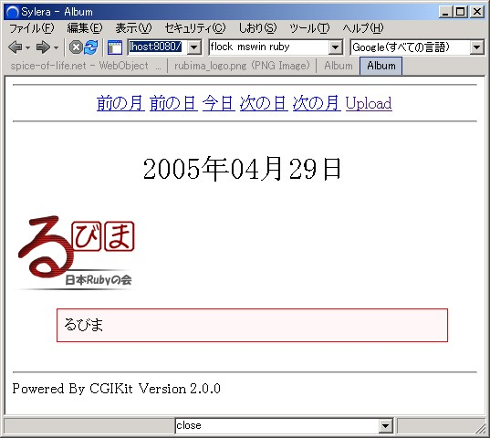
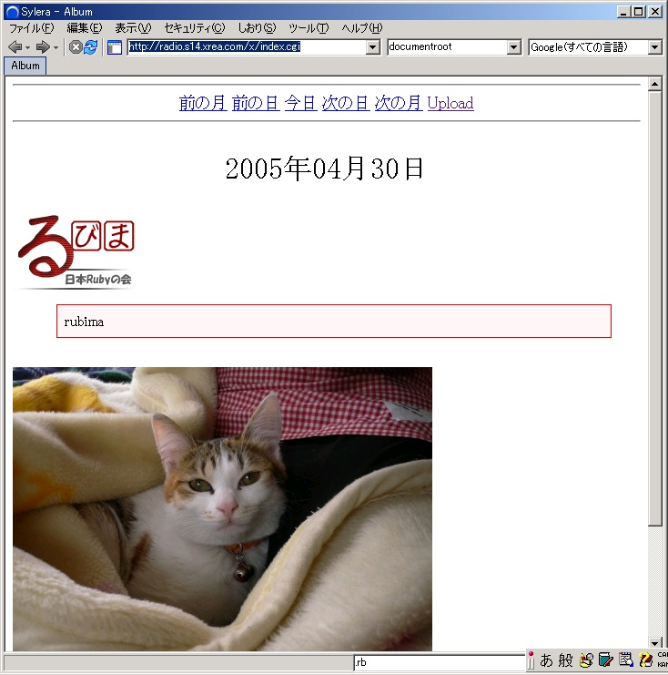

CGIKit2.x を用いたアルバム CGI/Web アプリケーション
著者: speakillof <speakillof at yahoo dot co dot jp>
はじめに
るびま5号では CGIKit-1.x を使った掲示板が紹介されていました。その時には CGIKit-2.x の情報がほとんどありませんでしたが、5月に CGIKit-2.x のベータ版がリリースされることになり、徐々に CGIKit-2.x の情報が増えています。この記事では CGIKit の紹介をかねて、CGIKit-2.x を使ったアルバムを作成してみます。
対象読者
- HTML、CGI、Ruby についてそれなりの知識がある人
- CGI や Web アプリケーションのためのフレームワークを探している人、もしくは、それを使ってみたい人
- 環境は Windows をメインにしていて、CUI には馴れていない人
- UNIX 系 OS をお使いの人は適宜読み替えてください。
- Mac OS X の人はごめんなさい。でも、CGIKit の作者である鈴木鉄也さんは Mac OS X で開発されているので、動作検証はされています。
CGIKit ってなあに？
非常に簡単に言えば、鈴木鉄也さんが作られている CGI や Web アプリケーションを作るための仕組みです。説明が簡単過ぎるかもしれませんが、今はその程度のとらえ方で十分です。概念だけ詳しく説明しても忘れてしまいますしね。
CGIKit の他にも CGI を作る仕組みってあるんじゃないの？
CGIKit 以外にも CGI や Web アプリケーションを作るための仕組みは色々あります。有名なところを下に挙げます。
- ERB Rubyに標準添付
- amrita
- cgi.rb Rubyに標準添付
- Nora
- Rails
- Nitro + Og
- などなど
ERB や amrita は HTML を作る仕組みを提供します。cgi.rb や Nora は HTML を作るだけでなく、CGI や Web アプリの工程を手助けする仕組みも提供してくれます。Rails や Nitro + Og になると、データベースにアクセスする機能まであります。
CGIKit 単体は Nora や cgi.rb と同じような機能を提供します。こう書くと、CGIKit は Rails や Nitro + Og よりも機能が劣るの？ という疑問が出てくるかもしれません。確かにCGIKit 単体にはデータベースにアクセスする機能はありませんが、日本で CGI のサービスを提供しているサーバーではデータベースが使えないなところが多く、データベースを必要としない CGIKit ならそういった場所でも活用することができます (当然ですが、データベースが使用可能なところでも CGIKit は使うことができます)。
もし、CGIKit とデータベースの両方を使うのでしたら、TapKit を試してみてください。TapKit は Rails の ActiveRecord や Nitro + Og の Og のようにデータベースにアクセスするための仕組みを提供します。CGIKit も TapKit も鈴木鉄也さんが作者ですので、相性が良いでしょう (これから良くなる？)。今回は TapKit については説明しませんが、興味のある人はるびまの4号の RLR･5号のCGIKit のTapKitの記事を読んでみてください。
じゃあ、CGIKit を使って何が嬉しいの？
簡単にずらっと挙げておきます。
- ユーザーが入力した値を簡単に扱うことができます (フォーム処理)
- ほぼ無修正で CGI、WEBrick に対応 (mod_ruby、FastCGI も使えるようになる予定)
- 普通の HTML (正確には XHTML) を使って Web ページを書くことができます。オーサリングツールを使うことも可能です
- 1度作ったページを簡単に再利用することができます
- などなど
･･･ぴんとこないかもしれませんね。この記事では主に 1 つ目と 2 つ目の利点を中心に紹介します。3 つ目・4 つ目の利点については CGIKit を試してもすぐに効果を実感できないと思います。
CGIKit を使うと困ることってあるの？
ありますよ。
- CGI で使うと処理が重たいです (WEBrick ではかなり改善します)。この問題はRuby-1.8 系では避けられないでしょう。最近の CPU は速いので、重たいと感じない人もいるでしょうが、筆者の環境 (Pentium III 600MHz Memory 192MB) で CGIKit を使うと少々重いです。xrea では重くありませんでした。
- CGIKit のルールにそって CGI や Web アプリケーションを作らなければなりません。ルールを守るのがわずらわしいという意見があります。
- Rails や Nitro + Og と比べると、データベースとの連携が弱いです。
ふーん。で、CGIKit を使った方が良いの？ 悪いの？
上に挙げた長所・短所を考慮した上で読者である皆さんが CGIKit を使うかどうかを決定してください。CGIKit を使用しなければならないということはありません。でも、もし興味があるのでしたら、この記事や CGIKit の Wiki を読んで CGIKit を試してくれると嬉しいです。
前口上はいいから、そろそろ始めてよ
というわけで、そろそろアルバムを作っていきましょう。最初にアルバムの機能を決めておきます。機能を詰め込むと作るのが大変になるので、シンプルな物にします。
- 1 度に 1 枚の画像だけアップロードできる
- 画像にコメントを付けることができるようにする
- アップロードできる画像の最大サイズは 1 枚で 1MB まで
- 日付ごとに画像一覧を表示する
- WEBrick で動かすことができるようにする (というか WEBrick を使って開発する)
この程度にしておきましょう。album.zipにソースを置いておきますので、読みすすめる前に手元の保存してソースを眺めてみてください。
アルバムを作るのに必要なものは何？
必要なものを下に挙げますね。
- Ruby-1.8.2 以上 (標準添付されている WEBrick、REXML、csv が必要)
- CGIKit-2.0.0 preview 1 (rbuconvを含む)
- エディター
- ブラウザー
Ruby は入手可能であれば 1.8.3 をお勧めします。また、Iconv が使用できる環境では HTML のパースでエラーになることがあります。この場合はシステムにインストールされている libiconv もしくは iconv.dll を再インストールしなければなりません。
Windows (除くCygwin) であれば http://www.kaoriya.net/ から入手できる Libiconv DLL 1.9.1 for Windows をインストールしてください。それ以外の環境の方は http://www2d.biglobe.ne.jp/~msyk/software/libiconv-patch.html を参考にして libiconv をコンパイル・インストールしてください。
エディターとブラウザーはお好きなもので結構です。
CGIKit のインストールは？
この記事では自分のマシンの OS(Windows2000) と xrea にインストールします。CGIKit の Wiki にもインストールの説明があるので、参考にしてください。
Ruby は One-Click Installer for Ruby を使いますが、もし、Ruby のインストールがすんでいない場合はRuby ではじめるプログラミング 第 1 回を参考に One-Click Installer for Ruby をインストールしてください。ここでは c:\ruby にインストールしたと仮定して話を進めます。
CGIKit はどこから手に入れるの？
SourceForge-jp の CGIKit のサイトからダウンロードできます。cgikit- x.x.x.tar.gz というファイルをダウンロードしてきて解凍してください。tar.gz という形式は eo 等の解凍ソフトで解凍することができます。 C:\cgikit-x.x.x に解凍したと仮定します。
この記事で作ったアプリケーションは cgikit-2.0.0-preview-1 で動作確認をしています。
OS(Windows2000) にインストールするー
解凍できたら、スタート -> プログラム -> アクセサリ -> コマンドプロンプト で コマンドプロンプトを起動し、下のようにコマンドを打ちます。これでインストールは終了です。
> c:
> cd c:\cgikit-x.x.x
> ruby -v
> ruby setup.rb config
> ruby setup.rb setup
> ruby setup.rb installえ、コマンドラインが面倒臭い？ じゃあ、エクスプローラーから C:\cgikit-x.x.x\lib\ 以下のフォルダーとファイルを C:\ruby\lib\ruby\site_ruby にコピーしてください。


インストール終了
試しにコマンドプロンプトから
> ruby -r cgikit -e 'p CGIKit; p CGIKit::VERSION'として CGIKit のバージョンが表示されることを確認してください。コマンドプロンプトを使いたくない人は確認しないでも大丈夫ですが、確認することをお勧めします。
xrea にインストール
次に ftp 経由でインストールします。インストールの前にいくつか注意があります。
- xrea はサーバーの仕様のために “x” ディレクトリの中でしか CGIKit が使えません (具体的には PATH_INFO が使えないことが問題です。何年間も同じ状態みたいですので、そうそう変わることはないでしょう)。
- tmp ディレクトリを作っておく必要があります (本当はなくても動くのですが、セキュリティ上先に作っておきます)。
- 画像を保存するための image ディレクトリも作ります。
ffftp というソフトを使って、cgikit に必要なファイルを xrea のサーバーにアップロードします。さきほどと同じように C:\cgikit-x.x.x\lib\ 以下のフォルダーをすべて /public_html/x 以下に保存し、tmp, image ディレクトリを作ります。以上の操作で下の図のようになると思います (ならないと困ってしまいます･･･)。

最後にパーミッションを変更します。ここでアップロードしたCGIKitのファイル (*.rb) は 600 に、image 以外のディレクトリ (フォルダー) は 700 にします。image ディレクトリは 755 にします。
開発の準備ー
開発を行うためのフォルダーを作っておきましょう。ここではすべてのファイルを
C:\albumに置くこととします。この中にファイルやフォルダーを作っていきます。今のうちに ftp の時と同じように C:\album\image を作成しておきます。
これからファイルを幾つか作っていきますが、最終的には下のようになります。
C:\album ---- upload.cgi
|
+-- index.cgi
|
+-- AlbumPage.rb AlbumPage.html AlbumPage.ckd
|
+-- UploadPage.rb UploadPage.html UploadPage.ckd
|
+-- MessagePage.rb MessagePage.html MessagePage.ckd
|
+-- util.rb
|
+-- webrick-app.rb webrick-app1.rb webrick-app2.rb
|
+-- tmp (自動生成)
|
+-- image (自分で作成) フォルダーの中にalbum.cssを配置ソースは album.zip から取得できます。
画像のアップロードはどうやって行うの？
では、アップロード用のページを作って、画像を保存するところから初めてみましょう。作ったファイルをいちいちサーバーにアップロードするのはうっとおしいので、開発は自分のマシンで行います (みなさんも修正の度にアップロードするのは面倒ですよね？)。
upload.cgi は行数が少ないね
これがアップロードを行う CGI スクリプトになります。
#!/usr/local/bin/ruby
require 'cgikit'
require 'UploadPage'
require 'MessagePage'
app = CGIKit::Application.new
app.main = UploadPage
app.run
1 行目は shebang というものです。普通 Windows では無用のものです (Cygwin・UNIX系OSでは使用できますが、ここでは詳しい説明はしません。というかできません。詳細を知りたい人は Linux や *BSD の Kernel のソースを読んでください)。
3-5 行目で必要なファイルを require しています。4・5 行目で require しているのがこれから作るスクリプトです。UploadPage が画像をアップロードするためのページで、MessagePage が画像のアップロードが終わった時に表示されるページです。これ以外にも AlbumPage というページが出てきますが、こちらはアルバムを表示するページです。
7-9 行目は CGIKit を動作させる準備です。7 行目では CGIKit::Application のオブジェクトを生成しています。このオブジェクトには CGIKit 全体の動作を設定したり、アプリケーションとしての動作を開始したりする役割があります。8 行目では CGIKit::Application#main にこの CGI スクリプトで表示するページを指定しています。upload.cgi はファイルアップロードのページを表示させる CGI スクリプトですので、UploadPage を指定します。9 行目の CGIKit::Application#run でアプリケーションが開始されます。
覚えておいて欲しいこと
ここで、重要なのは
- CGI では CGIKit::Application のオブジェクトにアプリケーションを開始する役割があること
- CGIKit::Application#main が表示するページを決めること
- CGIKit::Application#run でアプリケーションが起動すること
の 3 点です。
UploadPage はどうやって作るの？
CGIKit では 1 つのページを作るのに 3 つファイルが必要です。今回は UploadPage という名前のページを作るので、
- UploadPage.rb
- UploadPage.ckd
- UploadPage.html
の 3 つが必要です (ここでは説明を分かりやすくするためにたくさんの事を省略しました。詳しいことを知りたい人は CGIKit の Wiki を読んでください)。
この 3 つのファイルにページの構成を記述していきます。大まかな形を UploadPage.html に記述し、細かい部分を残った二つで設定します。
UploadPage.html は普通のHTMLなの？
そのとおりです。
<?xml version="1.0" encoding='shift_jis'?>
<!DOCTYPE html
PUBLIC "-//W3C//DTD XHTML 1.0 Strict//EN"
"http://www.w3.org/TR/xhtml1/DTD/xhtml1-strict.dtd">
<html xmlns="http://www.w3.org/1999/xhtml" xmlns:ck='http://cgikit.sourceforge.jp/' xml:lang="ja" lang="ja" >
<head>
<title> Upload </title>
<meta http-equiv="Content-Type" content="text/html;charset=shift_jis" />
</head>
<body>
<h1> Upload </h1>
<div class='date'>
<span ck:id='date' />
</div>
<div id='form'>
<form ck:id='form' action='foo'>
<div id='date'>
<input ck:id='year' />年
<input ck:id='month' /> 月
<input ck:id='day' />日 <br />
</div>
<div id='upload'>ファイル: <input ck:id='upload' /> </div>
<div id='comment'>コメント: <textarea rows='10' cols='80' ck:id='text'> </textarea> </div>
<div id='submit'><input ck:id='submit' /></div>
</form>
</div>
<div id='link'>
<a ck:id='album'>アルバムへ</a>
</div>
</body>
</html>UploadPage.html は XHTML と呼ばれる形式の HTML です。XHTML では最初に <?xml ･･･ ?> という行があり、その後に HTML タグを書いていきます。タグを書く上での注意点は
- <?xml … ?> の部分の__encoding に文字コードを必ず書くこと__。Windows では通常 shift_jis になります。Ruby-1.8.3 が出るまでは UTF-8 で書くことが望ましいのですが、今回は Windows で開発しているので、shift_jis を使います。
- タグの省略ができないこと
- <tag></tag> を <tag />と書いても良いこと
などです。他にも細かいことはいくつかありますが、これくらいのことに注意しておけば良いでしょう。その他に UploadPage.html を見ていて気づいたことはありませんか？ はい、 ck:id=’…’ という部分がたくさん見られますね。これが残りの二つのファイルを書くときに重要になります。
CGIKit は通常 HTML をそのまま出力しますが、タグに ckid 属性がある場合や ck:id が付いている場合、そのタグに修正を加えてから出力を行います。HTML を修正する部分に「目印」が置かれていると考えると分かりやすいです。
UploadPage.html に付いている目印を列挙すると下のようになります。
<span ck:id='date' />
<form ck:id='form' action='foo'>...</form>
<input ck:id='year' />
<input ck:id='month' />
<input ck:id='day' />
<input ck:id='upload' />
<textarea rows='80' cols='40' ck:id='text'></textarea>
<input ck:id='submit' />
<a ck:id='album'>アルバムへ</a>目印にはそれぞれ名前が付いています。最初の span タグには date という名前が、次の form タグには form という名前が付いています。この説明で分かるかもしれませんが、目印の名前は ck:id の値です。例えば、最後の a タグには album という名前が付きます。
覚えておいて欲しいこと
- HTML は XHTML という形式で書くこと
- HTML の文字コードは UTF-8 が推奨されること (少なくとも Ruby-1.8.3 が出るまでは UTF-8 が望ましい)
- HTML には目印が付いていること
- 目印を付けるには ckid 属性や ck:id を使うこと (ckid 属性を使うと、XHTML になりませんが……)
- 目印の部分を CGIKit が修正すること
ややこしいなあ。で、この UploadPage.html はどう修正されるの？
開発中は WEBrick を使ってページを確かめましょう。最初は webrick-app1.rb を使います。webrick-app1.rb の説明はここではしません。webrick-app.rb を説明する時にまとめて説明します。では、下のようにしてサーバーを起動させましょう。
> C:
> C:\album
> ruby webrick-app.rbコマンドプロンプトで実行するのが面倒な場合、Ruby One-Click Installer を使っている人は webrick-app1.rb をダブルクリックするだけで実行できます。ダブルクリックで実行した場合、黒いコマンドプロンプトの画面が表示されますが、ここに Enter を入力しておかないと動かないことがあります。
 webrick-app1.rb をダブルクリック。
webrick-app1.rb をダブルクリック。
 WEBrick サーバーが起動。起動すると 3 行のメッセージが出ます。
ブラウザで http://localhost:8080/upload.cgi にアクセスしてみてください。アップロードのページが表示されると思います。UploadPage.html と http://localhost:8080/upload.cgi のページとを見比べてどこが変化したのか考えてみてください。

UploadPage.html を修正する方法はー？
HTML を修正する方法は UploadPage.ckd と UploadPage.rb に記述します。え、まどろっこしい？ 確かにそうですね。3 つもファイルがあると編集するのが大変です。CGIKit-2.x からは 1 つのファイルにすべてを書くこともできるのですが、この記事ではその方法について説明しません。最初は基本にそってやりましょう。
UploadPage.ckd って変なファイルだなあ。何コレ？
これも Ruby スクリプトです。Hash が 1 つあって、そのキーは HTML に付けた目印の名前です。:date :year :month などが出てきていますが、すべて ck:id の値ですね。
では、Hash のバリューの方を見てみましょう。それぞれのバリューにも Hash が指定されています。date の目印には
:date => {
:element => String,
:value => :date,
},というバリューが指定されています。これは 「date という目印が付いた部分を CGIKit::String で修正します」 という意味です。:element には HTML を修正するための方法を指定します。指定した値のことをCGIKitではエレメントと言います。エレメントには様々な機能がありますが、とりあえずは HTML を修正するための仕組みと考えておくと良いでしょう。エレメントは全部で十数種類ありますが、この記事で作るアルバムではそのうち半分程度を用います。
Hash の中の :value というのは何でしょうか？ :value というのは修正を行う時のパラメーター (属性) です。CGIKit::String は目印の部分を :value の値に変えることが出来ますが、そのためには :value パラメーター (属性) が必要となります。例えば、
:date => {
:element => String,
:value => "hogehoge"
},上のように変更すると、
<span ck:id='date' />という部分は
hogehogeとなります。では、:value に指定されている :date というのは何でしょうか？ これは UploadPage#date のことです。 UploadPage.ckdにあるSymbolオブジェクトは UploadPage クラスのインスタンスメソッドを呼び出すことを意味します。その結果、
<span ck:id='date' />という部分は
Fri Apr 29 04:33:08 GMT+9:00 2005と表示されます。
次に UploadPage.ckd の :form を見てみましょう。ここでは form という目印の部分をCGIKit::Form で修正するよう設定されています。CGIKit::Form は目印の部分を HTML のフォームに修正し、そのフォームのタグに適切な属性を設定します。
:form => {
:element => Form,
:upload => true
},Hash の中の :upload というのはCGIKit::Formエレメントのパラメーター (属性) です。アップロードを行うために true を指定します。
エレメントにはフォームに関するものがありますが、そういったタイプのエレメントを使う時は CGIKit::Form の中で使わなければなりません。
次は :year について見てみましょう。
:year => {
:element => TextField,
:value => :year
},element には TextField が指定されているので、目印の部分は CGIKit::TextField エレメントで修正されます。:value はテキストフィールドに表示する値です。初めてアップロード用ページを表示する際は UploadPage#year は空ですので、テキストフィールドには何も表示されません。 :month, :day のテキストフィールドも :year とほとんど同じ構成ですので、分かると思います。
次は :upload です。
:upload => {
:element => Upload,
:value => :file
},CGIKit::Upload が使われていますね。これはファイルをアップロードするためのフィールドを表示します。:value パラメーター (属性) に関しては後で説明しますが、ここにアップロードされたファイルが入ります。:file は UploadPage#file に相当します。
最後に :album です。
:album => {
:element => Link,
:href => 'index.cgi'
}もう分かりますね。この部分は CGIKit::Link で修正が行われます。:href というパラメーター (属性) は a タグの href 属性を表します。このエレメントで修正すると
<a ck:id='album'>アルバムへ</a>が
<a href="index.cgi">アルバムへ</a>となります。index.cgi というのはアルバムページを表示するCGIスクリプトです。後ほど紹介します。
ここで説明していない :submit, :comment についてはご自分で考えてみてください。 (:submitについては後で説明があります)
覚えておいて欲しいこと
- HTML の目印の部分を修正するには *.rb, *.ckd に修正方法を記述する
- *.ckd には目印の名前をキーに、修正方法(Hash)をバリューとした Hash を書く
- :element には大まかな修正方法を指定する(String・Form・Linkなど)。ここで指定した値をエレメントという
- 各エレメントにはパラメーター (属性) があり、パラメーター (属性) を変更することで HTML の修正の仕方を変えることができる
UploadPage.rb はどうなっているの？
UploadPage クラスが定義されていますね。このクラスは CGIKit::Component を継承しています。ページを作る際には CGIKit::Component を継承したクラスを定義しなければなりません。覚えておいてください。次に include AlbumUtility をしています。CGI や Web アプリケーションに直接関係のない処理は AlbumUtility に定義されています。AlbumUtility については説明しませんので、興味のある方は util.rb を読んでみてください。
UploadPage#init は初期化メソッドです。ページが生成される際に一回だけ呼ばれます (正確に言うと UploadPage#initialize の中で呼ばれます)。筆者はいつもこのメソッドでハマります。皆さんも気を付けましょう。繰り返しますが、init は一回だけしか呼ばれません。UploadPage#init メソッドでは @year、@month、@day に実行時の日付が設定されます。
UploadPage#valid_file? はアップロードされたファイルが 1MB を超えるかどうかをチェックします。
UploadPage#save_file はすぐ後ろで説明します。
覚えておいて欲しいこと
- ページを構成するクラスは CGIKit::Component を継承しなければならない
余裕があれば下のことも覚えてください。
- CGIKit::Component#init をオーバーライドして初期化を行う
アップロードした時の説明がないよ。怠けているのー？
分かりましたよ。では、アップロードに関連した処理について説明します。
<div id='form'>
<form ck:id='form' action='foo'>
<div id='date'>
<input ck:id='year' />年
<input ck:id='month' />月
<input ck:id='day' />日 <br />
</div>
<div id='upload'>ファイル: <input ck:id='upload' /> </div>
<div id='comment'>コメント: <textarea rows='10' cols='80' ck:id='text'></textarea> </div>
<div id='submit'><input ck:id='submit' /></div>
</form>
</div>CGIKit::Form (UploadPage.ckd の :form の :element に Form を指定しましたよね？) の中には CGIKit::TextField、CGIKit::Text、 CGIKit::Upload、CGIKit::Submit の 4 種類のエレメントがあります。ユーザーが UploadPage のフォームに入力すると、その値は一度 UploadPage に戻ってきます。そして、CGIKit::Form に配置したエレメントによって入力された値が UploadPage に割り当てられます。
例えば、:year だと
:year => {
:element => TextField,
:value => :year
},となっており、:value に :year が指定されています。:value は表示の時に使うという説明をしましたが、それ以外にも入力されたテキストフィールドの値を処理する際にも使用されます。
上の例ではユーザーがテキストフィールドに入力した値は UploadPage#year= を使って UploadPage に代入されます。例えば、:year のテキストフィールドに 2004 と入力して、OK のボタンを押すと UploadPage#year= が呼ばれて、UploadPage のインスタンス変数の @year に “2004” が入力されます。擬似的なコードを書くと下のようになります (実際にはもっと複雑です)。
# self は UploadPage クラスのオブジェクト
self.year = "2004"もう一つ例を挙げておきましょう。:upload です。表示の際、Upload エレメントはアップロードするためのフィールドを作ります。ユーザーの入力が済んで OK ボタンが押されると、Upload エレメントは :value に指定されたメソッドを使ってアップロードされたファイルを格納します。
:upload => {
:element => Upload,
:value => :file
},この場合、アップロードされたファイルは UploadPage#file= を使って UploadPage の @file に格納されます。格納されたファイルは CGIKit によって CGIKit::ByteData という形に変換されています。ByteData は
- length
- write_to_file
- content_type
- path
などのメソッドを持ち、このオブジェクトからアップロードされたファイルの情報を得ることができます。
最後は :submit です。
:submit => {
:element => Submit,
:value => "OK",
:action => :save_file,
},ここでは Submit エレメントが使われています。Submit エレメントは目印の部分をサブミットボタンに変化させます。:value はボタンを表示する時の名前です。アップロードのページを表示させた時、「OK」というボタンがあるのはこのためです。:action はボタンが押された時に実行されるメソッド名を表します。この例では UploadPage#save_file が実行されます。
流れが分かりにくいー
うーん。大まかに説明すると、
- ユーザーがアップロードのページにアクセス
- UploadPage が表示される
- ユーザーがフォームに入力して、サブミットボタンを押す
- フォームの値が UploadPage に戻ってくる
- CGIKit のエレメントがフォームの値を UploadPage に割り当てる
- UploadPage#save_file が実行される
となります。
UploadPage#save_file の中身はー？
22: def save_file
23: m = page(MessagePage)
24:
25: unless valid_file?
26: m.message = '指定されたファイルはサイズが大き過ぎます。'
27: m.redirect = true
28: return m
29: end
30: unless valid_date?
31: m.message = '日付がおかしいです。'
32: m.redirect = true
33: return m
34: end
35:
36: d = ymd2imagedir
37: begin
38: unless FileTest.directory?(d)
39: Dir.mkdir(d)
40: end
41: imagepath = File.join(d, @file.path);
42: @file.write_to_file( imagepath, true )
43: add_entry(imagepath.split(File::Separator)[1..-1].join(File::Separator), Kconv::tosjis(@comment), ymd2csvpath)
44: m.message = '保存に成功'
45: rescue Exception
46: m.message = '保存に失敗: ' + $! + ' --- '+ $!.backtrace.inspect
47: return m
48: end
49:
50: m
51: endここでは AlbumUtility で定義されたメソッドを多用しています。
UploadPage.rb の 23 行目では page という CGIKit のメソッドを作って MessagePage というページを作っています。MessagePage は後ほど紹介しますが、書き込みの成功・失敗を表示する役目を持ちます。25-34 行ではユーザーの入力した内容をチェックします。
すでに述べたようにユーザーが入力した内容は自動的に処理され、UploadPage のインスタンス変数の @year、@month、@day、@file、@comment に格納されます。テキストフィールド・テキストエリア・アップロードを担当するエレメントがそれぞれのパラメーター (属性) に基づいて UploadPage のオブジェクトにユーザーの入力を格納するからです。後はその値をチェックすれば良いだけです。
valid_file? はユーザーがアップロードしようとしている画像が 1MB を超えないかどうかをチェックします。valid_date? は入力された日付が日付として正しいかどうかをチェックします。もし、これらのメソッドが false を返すと、エラーメッセージが MessagePage ページに設定され、その MessagePage が save_file の返り値となります。その後、CGIKit は save_file の返り値を受け取って、エラーメッセージを表示させます。この辺りは CGIKit だと楽です。URL を指定しなくてもページとなるオブジェクトをメソッドの返り値にするだけです。
36 行目は ymd2imagedir で @year、@month、@day から画像を保存するディレクトリのパスを取得しています。そして、42、43 行目で実際にファイルを保存します。@file にはアップロードされたファイルが格納されており、その形式が CGIKit::ByteData に変換されているということは既に説明しました。アップロードされたファイルを保存するには ByteData#write_to_file(path, locked) を呼び出します。引数の path には保存するパス名を、locked には排他ロックをかけるかどうかを指定します。難しいことは抜きにして、
- ByteData#write_to_file でアップロードされたファイルを保存
- ByteData#path でアップロードされたファイルの名前を取得
ということを覚えておきましょう。43 行目では add_entry で入力された画像のコメントと画像の保存先を CSV ファイルに記録します。保存に成功すると、50 行目で MessagePage ページが UploadPage#save_file の返り値になり、CGIKit がそれを表示をします。書き込み中にエラーがあった場合は 45 行目でエラーを捕まえ、保存に失敗したことを表示させます。
保存する方法については細かく説明しません。CGIKit::ByteData#write_to_file、AlbumUtility#add_entry で保存しますので、興味のある方は該当するメソッドのソースを読んでください。この二つのメソッドによってコメントと画像のパス名は CSV ファイルに保存され、画像は日付名のディレクトリに保存されます。
でー、MessagePage って何するの？
画像の保存に成功したか失敗したかを表示させるんですよ。
- Message.html
- MessagePage.rb
- MessagePage.ckd
MessagePage.html
<?xml version="1.0" encoding='shift_jis'?>
<!DOCTYPE html
PUBLIC "-//W3C//DTD XHTML 1.0 Strict//EN"
"http://www.w3.org/TR/xhtml1/DTD/xhtml1-strict.dtd">
<html xmlns="http://www.w3.org/1999/xhtml" xmlns:ck='http://cgikit.sourceforge.jp/' xml:lang="ja" lang="ja" >
<head>
<title> Upload </title>
<meta http-equiv="Content-Type" content="text/html;charset=shift_jis" />
</head>
<body>
<span ck:id='msg' />
<hr />
<div id='link'>
<a ck:id='album'>アルバムへ</a>
</div>
</body>
</html>目印が 2 つしかないから簡単ですね。最初の目印(:msg)には UploadPage で設定されたメッセージが入ります。
二つ目の目印(:album)がアルバムページへのリンクになります。
:album => {
:element=> Link,
:href => :index_url
},となっていますので、:album の部分は MessagePage#index_url が返す URL へのリンクとなります。
def index_url
File.join( File.dirname(application.baseurl), 'index.cgi' )
endindex_url の実装は上のようになっています。application というのは CGIKit::Application のことです (upload.cgi で出てきましたよね？)。ここには色々な情報が格納されており、CGIKit::Application#baseurl を使って、実行中のスクリプトのパス名 (WEBrick で実行する場合はそれに相当するもの) を取得します。この値からアルバムページを表示する index.cgi へのパス名を生成します。
面倒だよー。index.cgi へのリンクくらいもっと簡単にしろよー。
確かにこの部分はちょっと面倒ですね･･･。
UploadPage では直接 ‘index.cgi’ を指定していましたが、MessagePage では回りくどい方法で指定しています。これは CGIKit が生成する URL の仕様を回避するためなんですが、この記事ではその問題については説明しません。回避方法は色々あるのですが……。
仕方ないなー。とりあえずファイルをアップロードできるか試させてよ
webrick-app2.rb を使います。先ほどと同じように
ruby webrick-app2.rbとして、http://localhost:8080/upload.cgi にアクセスし、フォームに値を入力してボタンを押してみてください。うまく動きましたか？ 多分、うまく動かない人が大多数だと思います (苦笑)。これは mswin32 版の Ruby のバグです。
- http://www.garbagecollect.jp/ruby/mswin32/ja/2005/02
- http://blade.nagaokaut.ac.jp/cgi-bin/scat.rb/ruby/ruby-dev/25574
動かない場合は C:\ruby\lib\ruby\site_ruby\cgikit\utilities.rb の
- FileLock.shared_lock
- FileLock.exclusive_lock
の flock のある行を下のようにコメントにしてください。
class FileLock
# Creates a shared file lock on a file.
def self.shared_lock( filename, mode = 'r' )
File.open( filename, mode ) do | io |
#io.flock File::LOCK_SH
yield io
#io.flock File::LOCK_UN
end
end
# Creates a exclusive file lock on a file.
def self.exclusive_lock( filename, mode = 'w' )
File.open( filename, mode ) do | io |
#io.flock File::LOCK_EX
yield io
#io.flock File::LOCK_UN
end
end
endとりあえずこれで動きます (場当たり的対応なので、このバグが修正されたRubyを使っている人はCGIKitのソースを修正しないでください)。
修正できたらもう一度試してください。上手くアップロードできたら、image ディレクトリに日付の名前のフォルダーができていること、日付のフォルダーの中に画像があること、CSV ファイルが出来ていることを確認してください。


次はアルバムページだね
はい。最初にアルバムページを表示させる index.cgi を載せますね。
#!/usr/local/bin/ruby
require 'cgikit'
require 'AlbumPage'
app = CGIKit::Application.new
app.main = AlbumPage
app.web_server_resources = './image' ; app.document_root = './'
app.run
UploadPage が AlbumPage に変わっただけで upload.cgi と構成はほとんど同じです。7 行目だけが少し変わっています。このページは CSS や画像などの外部リソースを使います。CGIKit で外部リソースを使う場合、web_server_resources, document_root を設定しなければなりません (絶対ではありませんが、多くの場合、指定する必要があります)。今回は画像・CSV ファイル・CSS を image 以下に置くので、 web_server_resources には画像や CSS の置いてあるフォルダーを割り当てます。document_root はとりあえず index.cgi のあるフォルダーにします。
本来であれば document_root には Apache 等の HTTP Server の DocumentRoot を指定しなければなりません。そのため document_root はアップロード先のサーバーの仕様に合わせて変化させる必要があります。xrea での指定方法を後で説明しますので、それを参考にしてご自分の環境に合わせて修正してください。
肝心の AlbumPageはー？
- AlbumPage.html
- AlbumPage.rb
- AlbumPage.ckd
AlbumPage.html を見ていきましょう。
<?xml version="1.0" encoding='shift_jis'?>
<!DOCTYPE html
PUBLIC "-//W3C//DTD XHTML 1.0 Strict//EN"
"http://www.w3.org/TR/xhtml1/DTD/xhtml1-strict.dtd">
<html xmlns="http://www.w3.org/1999/xhtml" xmlns:ck='http://cgikit.sourceforge.jp/' xml:lang="ja" lang="ja" >
<head>
<title> Album </title>
<meta http-equiv="Content-Type" content="text/html;charset=shift_jis" />
<span ck:id='CSS' />
</head>
<body>
<hr />
<div class='navigate'>
<a ck:id='prev_month'>前の月</a> <a ck:id='prev_day'>前の日</a>
<a ck:id='today'>今日</a>
<a ck:id='next_day'>次の日</a> <a ck:id='next_month'>次の月</a>
<a ck:id='upload'>Upload</a>
</div>
<hr />
<div id='album'>
<p id='date'> <input ck:id='year' />年<input ck:id='month' />月<input ck:id='day' />日 </p>
<div ck:id='rep'>
<div class='image'><img ck:id='img' src='bar' alt='' /></div>
<div class='comment'> <span ck:id='comment'>hoge</span> </div>
</div>
</div>
<hr />
<div>
Powered By CGIKit Version <span ck:id='version'>version</span>
</div>
</body>
</html>AlbumPage.html のヘッダーには span タグがある。変なの。
この span タグは CSS へのリンクになります。
<head>
<title> Album </title>
<meta http-equiv="Content-Type" content="text/html;charset=shift_jis" />
<span ck:id='CSS' />
</head>span タグには CSS という名前が付いていますので、設定は AlbumPage.ckd の :CSS で行われます。
:CSS => {
:element => GenericElement,
:tag => 'link',
:rel => 'stylesheet',
:type => 'text/css',
:href => :css
},CGIKit::GenericElement が使われていますね。これは自分の好きな HTML タグに修正するためのエレメントです。:tag に生成したいタグの名前を入れます。残りの :rel :type :href は link タグの属性を指定します。href 以外は固定になっていて、CSS を使ったことがある人ならどのようなタグになるか予想が付くと思います。下にエレメントで修正した後の一例を示します。
<link href="/image/album.css" rel="stylesheet" type="text/css"/>href の部分は AlbumPage#css の値によって変化します。では、AlbumPage#css はどうなっているのでしょうか？ 下にメソッドの実装を抜粋します。
def css
resource_manager.url('album.css')
endresource_manager というのが出てきましたね。これは CGIKit::Application#web_server_resources に指定したディレクトリから必要な資源 (画像・CSS・Javascript など) を取得するためのオブジェクトです (本当はそれ以外にも役目があります)。url メソッドで資源の URL を生成します。
この例では、web_server_resources = ‘./image’ document_root = ‘./’ となっており、C:\ album で resource_manager.url(‘album_css’) が実行されると、 下のように処理されます。
- web_server_resources に指定されたディレクトリに ‘album.css’ がないか調べる
- C:\album\image\album.css が見つかる(相対パスは絶対パスに変換)
- document_rootに指定されているパス(絶対パスに変換)をリソースのパス名から取り除く
- C:\album\image\album.css から C:\album が取り除かれて、image\album.css となる
- URLとしては /image/album.css となる。
この結果、上で示したように link タグの href 属性は /image/album.css になります。
こんなまどろっこしい事をしなくても
:href => 'image/album.css'や
:href => '/image/album.css'でOKじゃないかと考えた人は多いと思います。でも、残念ながらそれはできないんですね。興味のある人はサーバーに CGI スクリプトを設置してから試してみてください。
次は a タグがいっぱい出てくるね
AlbumPage.html の前半にはナビゲーションのためのリンクが 6 つあります。左から「前の月」「前の日」「今日」「次の日」「次の月」「アップロード」で、それぞれの目印の名前は
- :prev_month
- :prev_day
- :today
- :next_day
- :next_month
- :upload
となっています。:upload の AlbumPage.ckd の部分を抜粋します。
:upload => {
:element=> Link,
:href => :upload
},MessagePage#index_url の時と同じように少々回りくどい方法で upload.cgi へのリンクを生成します。
その他の 5 つはすべて同じ構造ですので、:prev_month についてのみ説明します。
:prev_month => {
:element => Link,
:action => :show_prev_month
},新しく:action のパラメーター (属性) が使われていますね。:action にはリンクが click された時に実行されるメソッドを指定します。
def show_prev_month
a = page(AlbumPage)
set_ymd(a, prev_month)
a
endshow_prev_month の実装は上のようになります。最初に新しい AlbumPage のページを生成し、set_ymd で現在表示している AlbumPage より1か月前の日付を新しいページに設定し、メソッドの返り値とします。後は CGIKit が新しく生成した AlbumPage を表示してくれます。
日付にあたる部分？
AlbumPage.html の次の部分には:year、:month、:dayという目印があります。ここでは @year、@month、@day の値を日付として表示させます。特に新しいことはありません。
最後ー
<div ck:id='rep'>
<div class='image'><img ck:id='img' src='bar' alt='' /></div>
<div class='comment'> <span ck:id='comment'>hoge</span> </div>
</div>ここでは同じ日付に保存された画像をすべて表示させます。:rep という目印は AlbumPage.ckd では下のような Hash になっています。
rep => {
:element => Repetition,
:list => :images,
:item => :i
},Repetition というのは初めて出たエレメントですね。これはタグの中身を繰り返し出力する機能があります。この場合は
<div class='image'><img ck:id='img' src='bar' alt='' /></div>
<div class='comment'> <span ck:id='comment'>hoge</span> </div>という部分が繰り返されます。繰り返しの挙動は :list パラメーター (属性) で設定します。:list には AlbumPage#images が指定されており、このメソッドの返り値を使って繰り返しが行われます。
def images
begin
get_entries(ymd2csvpath)
rescue Exception
[]
end
endUpload した際には画像のパス名とコメントが CSV としてファイルに保存されており、そのファイル名は ymd2csvpath で取得できます。get_entries は CSV ファイルに格納されている画像のパス名とコメントを取得し、Array にして返します。
繰り返しを行う直前、item パラメーター (属性) に指定されたメソッド(AlbumPage#i=)を使って list パラメーター (属性) の値を一回一回 AlbumPage に代入します。その後、
<div class='image'><img ck:id='img' src='bar' alt='' /></div>
<div class='comment'> <span ck:id='comment'>hoge</span> </div>の部分を CGIKit が展開します。例えば、AlbumPage#get_entries が
[
["20050429/rubima.png", "rubima"], # <-- 1
["20050429/rubima2.png", "rubima2"], # <-- 2
]上のような Array を返すと、最初に 1 の Array が AlbumPage#i= を通して @i に代入され、繰り返しの中の目印が CGIKit::Image CGIKit::String で修正されます。
<div class='image'><img src='/images/20050429/rubima.png' alt='' /></div>
<div class='comment'> rubima </div>その結果、上のようになります。2 に関しても同様に処理されて
<div class='image'><img src='/images/20050429/rubima2.png' alt='' /></div>
<div class='comment'> rubima2 </div>となります。ユーザーが入力したコメントには「<」「>」等が含まれている可能性がありますが、この辺りは CGIKit::String がよろしくやってくれます (指定しない限り CGIKit::String は自動的にエスケープを行います)。
CGIKit::Image が何をするのかは予想できると思います。
:img => {
:element => Image,
:src => :img_path,
},AlbumPage.ckd では :img に CGIKit::Image が指定されています。CGIKit::Image は目印の部分を img タグに変換します。:src にはHTMLのsrc属性を直接指定します。
じゃあ、実行してみようよ。
そうですね。これで一通りは動きます。webrick-app.rb で実行しましょう。
#!/usr/bin/env ruby
require 'webrick'
require 'cgikit'
require 'cgikit/webrick'
require 'UploadPage'
require 'MessagePage'
require 'AlbumPage'
port = (ARGV.shift || 8080).to_i
app = CGIKit::Application.new
app.main = UploadPage
app2 = CGIKit::Application.new
app2.main = AlbumPage
app2.web_server_resources = './image'; app2.document_root = './'
server = WEBrick::HTTPServer.new({:Port => port})
server.mount('/upload.cgi', WEBrick::CGIKitServlet::ApplicationHandler, app)
server.mount('/', WEBrick::CGIKitServlet::ApplicationHandler, app2)
server.mount('/image', WEBrick::HTTPServlet::FileHandler, './image')
trap("INT"){ server.shutdown }
server.start
2-7 行で必要なファイルを require しています。11-15 行 で CGIKit::Application のオブジェクトを二つ生成しています。16 行ではサーバーを生成し、17-18 行では URL と 実行される CGIKit::Application を結び付けます。これにより URL と表示されるページとの関係は下のようになります。
- http://localhost:8080/{upload.cgi, imageを除くすべて} -> AlbumPage
- http://localhost:8080/upload.cgi -> UploadPage
WEBrick::CGIKitServlet::ApplicationHandler は CGIKit::Application と WEBrick との間をとりもちます。例えば、http://localhost:8080/upload.cgi にアクセスがあると、WEBrick はその URL に結び付けられている Handler を探しに行きます。この例では CGIKit::CGIKitServlet::ApplicationHandler が該当することになります。次に ApplicationHandler は URL に対応する CGIKit::Application を探しにいき、main が UploadPage である CGIKit::Application を見つけます。その後はApplicationHandler が CGIKit::Application#run を実行して、その結果をアクセス元へ返します。(17-19 行は CGIKit というよりも WEBrick の設定です。詳細はWEBrick のドキュメントを読んでください。)
では、上に挙げた URL にアクセスしてきちんと動作するか試してみましょう。 
完成したー？
まだですよ。WEBrick でのテストは終わりましたが、CGI スクリプトとして動かしていません。xrea にアップロードしてみましょう。
筆者のサイトは http://radio.s14.xrea.com/ ですので、ftp 接続で s14.xrea.com サーバーへ radio でログインして /public_html/x にアップロードします。
アップロードする前に index.cgi の設定を行います。7 行目を修正します。
app.web_server_resources = '/virtual/radio/public_html/x/image'
app.document_root = '/virtual/radio/public_html'うーん。裏技みたいですね。/public_html/x にアップロードしたファイルは 実際には /virtual/radio/public_html/x に存在しているわけです。これを web_server_resources や document_root に反映させます。 (ログイン名が異なれば違うパスになります。)
document_root には http://radio.s14.xrea.com/ に相当するディレクトリのパス名を設定します。この場合は /virtual/radio/public_html になります。web_server_resources は /public_html/x/image に相当するディレクトリですので、 /virtual/radio/public_html/x/image になります。
アップロードするのは上のファイル・フォルダー構成に載せたもの全部です。アップロード先は /public_html/x です。すでに述べたように image 以外のディレクトリは 700 のパーミッションに変更し、 image ディレクトリは 755 にします。index.cgi、 upload.cgi は 755 に、album.css は 644 に、それ以外のファイルはすべて 600 にします。アップロードが完了したら、ブラウザでアクセスして色々試してみてください。 
これでおしまい？
アルバム CGI が動きましたので、これでおしまいです。アルバム作成を通じて CGIKit の特徴が少しでも伝わったでしょうか？
今のアルバム CGI はアップロードした画像の削除や二重登録への対処はできません。ナビゲーションにカレンダーを使いたいなどの要望もあると思います。それについて皆さんが自分で考えてみてください。CGIKit には色々なサンプルが付属していますので、参考になると思います。
でも、困っていることがいっぱいあるー
- URL に変な文字列がある
- tmp ディレクトリに変なファイルがいっぱい
- 1MB 以上の大きなファイルもアップロードしたいよー
- HTML を書くときに <head>…</head> はほとんど同じ。ページごとに毎回同じ事を書くのはいや
- 1 つのページを書くのに 3 つもファイルを編集したくなーい
- upload.cgi と index.cgi を分ける理由が分からない
- フォームの入力をチェックするのは良いけど、もう少し良い方法はない？
- cgikit-x.x.x/lib/cgikit-all.rbって何？7000行もあるけど。
- xrea の広告を載せていないよー。規約違反だー
これについては紙面がありませんので、割愛させて頂きます。･･････嘘です。ごめんなさい。Web マガジンなので、紙面はいくらでもあります。本当は締切時間ぎりぎりで、対処方法を説明する時間がないんです (ぺこぺこ)。CGIKit の Wiki にはそれぞれの対処方法が書かれています (対処法がないものもあります)。是非、Wiki を読んでみてください。
開発する際のアドバイス
簡単ですが、開発の際のアドバイスを書いておきます。
ck コマンド
cgikit-x.x.x/bin 以下に開発に役立つコマンドが置いてあります1。簡単に紹介します。
ckparse
HTML がどのようにパースされるか知りたい時に使います。使い方は
ruby ckparse Hoge.htmlという感じです。パースの結果を pp (Pretty Print) で出力してくれます。
ckproject
ckproject はアプリケーションを作り始める時に使用します。
使い方:
ruby ckproject hogehoge_dirこの記事で紹介した webrick-app.rb や index.cgi は手で書きましたが、ckproject はこれらの雛型を作ってくれます。それ以外にも CGI や Web アプリケーションに必要なディレクトリを作成してくれます。
ckcomponent
ページを作る時の雛型を生成します。
ckconvert
CGIKit-1.x の ページを 2.x 用に変換します。1.x と 2.x では書式がかなり違うので、ckconvert だけでは対応できないことがあります。その場合は手動で修正する必要があります。
ckd ファイルのチェック
ckd ファイルを書き終えたら ruby で実行してみましょう。
ruby Hoge.ckd文法のチェックです。筆者はしばしばコンマを忘れるので、これでチェックしていま･･････せん。いつもエラーページを見てから直しています (苦笑)。
デバッグ
webrick-app.rb を debug.rb で立ち上げて、適当なポイントにブレイクポイントを設定します。下の例では UploadPage#save_file にブレイクポイントを設定しています。
> ruby -r debug webrick-app.rb
Debug.rb
Emacs support available.
webrick-app.rb:2:require 'webrick'
(rdb:1) b ./UploadPage.rb:23
Set breakpoint 1 at ./UploadPage.rb:23
(rdb:1) c
[2005-05-01 11:14:14] INFO WEBrick 1.3.1
[2005-05-01 11:14:14] INFO ruby 1.8.2 (2004-12-25) [i386-cygwin]
[2005-05-01 11:14:14] INFO WEBrick::HTTPServer#start: pid=420 port=8080ブレイクポイントを設定したら、ブラウザで http://localhost:8080/upload.cgi にアクセスします。アップロードの画面が現れるまでしばらく時間がかかります。
SYOGO-KODFLGQGA - - [01/May/2005:11:15:20 GMT+9:00] "GET /upload.cgi HTTP/1.1" 200 1206
http://localhost:8080/ -> /upload.cgi画面が表示されたらブラウザ上からファイルをアップロードします。しばらくすると、下のように UploadPage#save_file で止まります。
Breakpoint 1, save_file at ./UploadPage.rb:23
./UploadPage.rb:23: m = page(MessagePage)
(rdb:2)後は step、next、list、frame、display等を使って、デバッグします。この方法ならセッション関係のバグも追跡できます。RDT や RDE でもこの方法は使えると思いますが、実際に試したことがないので、どうなるか分かりません。
最後に
筆者が考える CGIKit の特徴を挙げておきます。
- エレガントに書ける
- フォームの入力は CGIKit が自動的に処理してくれるので、フォームの name 属性をコードや HTML でいじる必要はありません。HTML に関しては valid な XHTML を使用することができます。
- リンク・ボタンのクリックをイベントのように扱うことができる
- GUI のソフトを作る時に近い感覚でコードを書くことができます。
- コードの再利用性が高い
- 今回の記事では全く触れていませんが、コンポーネントという仕組みを使うと既存のコードを簡単に再利用することができます。
「エレガントに書ける」というのが CGIKit の一番大きな特徴だと筆者は考えます。WebObjects のように開発環境が付属すればもっとエレガントに書けるんですが･･･2。でも、注意しないとコードがごちゃごちゃするのは CGIKit でも同じです。
リンク
- CGIKitのWiki 本家
- spice-of-life.net CGIKit、TapKit の作者である鈴木鉄也さんの site です。
- WebObject Apple が提供している Web アプリケーションフレームワークです。昔は非常に高価だったようです。CGIKit は WebObject を参考に作られています。
- SWS CGIKit と同じく WebObjects を参考に作られている Web アプリケーションフレームワークです。Ruby で書かれており、CGIKit とは兄弟のようなものです。
- Tapestry WebObjects を参考にしている？ Java で書かれた Web アプリケーションフレームワークです。
参考文献
参考文献は 2 つです3。でも、CGIKit のソースと ML のメールが一番に参考になります。
著者について
某サービス業をしています。2 年程前、CGIKit-1.0 のリリース前に開発のお手伝いをしていましたが、その後プログラムを書くのを止めていました。 2005 年になって CGIKit-2.x の開発が始まったことを知って再びお手伝いをすることにしました。CGIKit-2.x のお手伝いを始めた時、CGIKit-1.x の記憶がほとんどなくて、愕然としたのは内緒です (苦笑)。